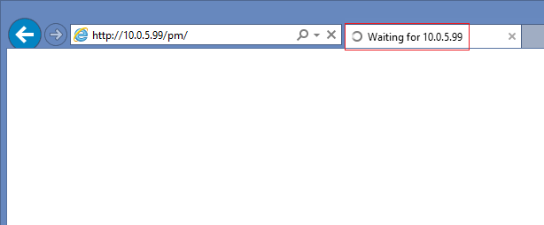

I installed Password Manager portals on a server in a DMZ and configured as per
Administrator's guide, but I cannot get to any portal. All 3 of them keep loading and do not
show anything.

Such behavior occurs when the frontend server cannot communicate to the backend because of the firewall or antivirus software blocking connection.
First of all make sure that the frontend can ping the backend and vice versa. Also please make sure that all required firewall rules are in place. Refer to the KB2145. If the above does not help try temporary disabling all firewalls and antivirus software to confirm.
Such behavior occurs when the frontend server cannot communicate to the backend because of the firewall or antivirus software blocking connection.
First of all make sure that the frontend can ping the backend and vice versa. Also please make sure that all required firewall rules are in place. Refer to the KB2145. If the above does not help try temporary disabling all firewalls and antivirus software to confirm.